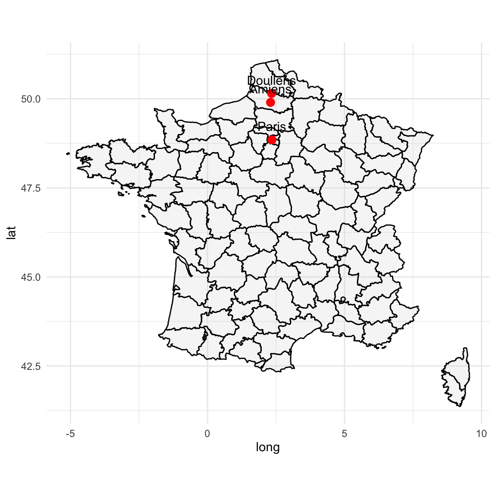
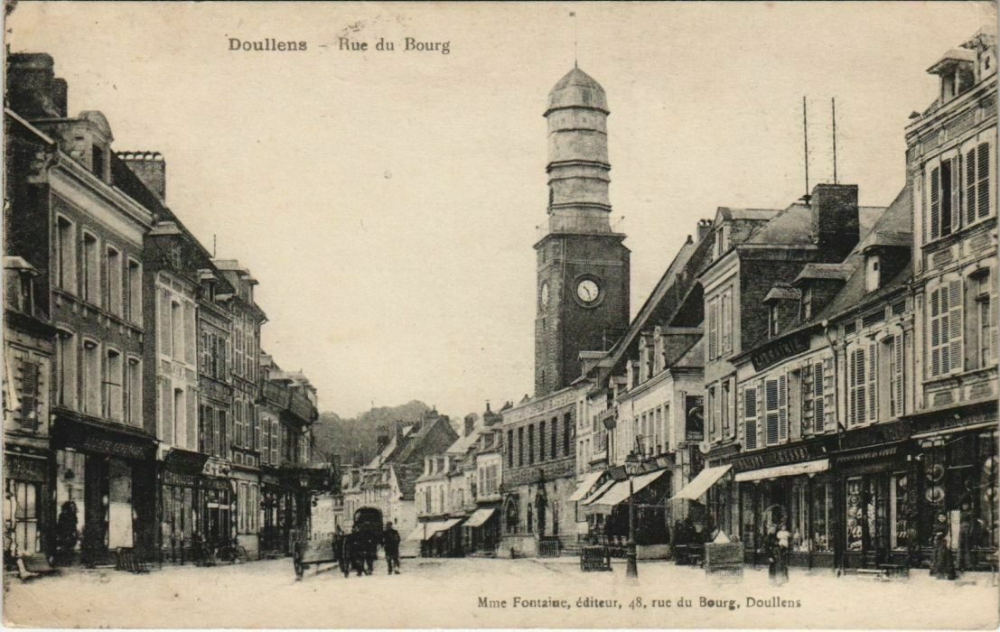
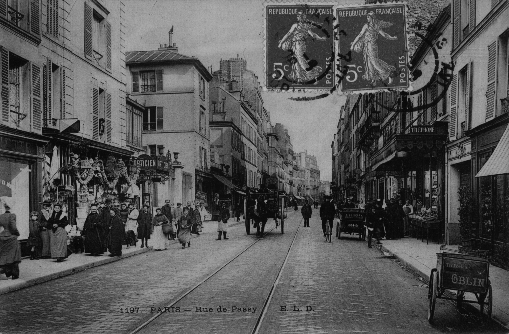

graph TD P1[Pierre Joseph Théophile Ambroise<br>1810–1838] P2[Aurore Élisabeth Joséphine Lecointe<br>1807- ] P1 --> A[Aline Jullienne Joséphine Ambroise<br>1837–1865] P2 --> A A --> Jn[Jeanne<br>1855‑?] A --> Cl[Claire<br>1857‑?] A --> MH[Marthe Héloïse<br>1858‑?] A --> VS[Victoria Sophie<br>1860‑?] A --> Al[Alfred<br>1861‑?] A --> Ad[Adrienne<br>1863‑1902] A --> F[Florimond<br>1865‑?]
3 Aline Julienne Joséphine Ambroise (1837-1865)
Aline Julienne Joséphine est née à Doullens le 3 mai 1837. Elle fut une femme pauvre — ou, au mieux, modeste — du XIXe siècle. Une femme dont l’histoire ne conserve presque rien, sinon quelques lignes sèches sur les registres d’état civil. Et pourtant, elle tient une place essentielle dans notre lignée Ambroise. C’est elle qui a transmis le nom, seule, à chacun de ses enfants. Aucun homme n’a reconnu ces naissances. Aucun père n’a laissé sa trace.
Son père, Pierre Joseph Théophile Ambroise (1810-1838), était tailleur d’habits à Doullens, comme ses deux frères et comme tant d’Ambroise avant lui, depuis George Ambroise (1635-1709), maître tailleur dans la même ville dès le XVIIe siècle. Sa mère, Aurore Élisabeth Joséphine Lecointe (1807-), venait d’un milieu d’artisans : sœur d’un serrurier, belle-sœur d’un boulanger.
Ils se marièrent en 1832. Pierre Joseph avait 22 ans. Il mourut cinq ans plus tard, à 27 ans, laissant derrière lui une fillette de un an et une veuve de 30 ans. À Doullens, dans les années 1830, lorsqu’un homme mourait si jeune, la famille basculait immédiatement dans la précarité. Il n’existait ni secours public, ni pension. La survie dépendait alors des solidarités familiales, des voisins, de ce que chacun pouvait donner ou faire.
Julienne quitta Doullens. Elle partit pour Amiens, puis Paris. Peut-être poussée par une grossesse, peut-être par le désir de recommencer. Elle y vécut une vie rude. Les métiers qu’elle exerça — piqueuse de bottines, lingère — parlent d’eux-mêmes.
Elle donna naissance à au moins sept enfants, tous naturels, tous enregistrés sous son seul nom. Le premier, Jeanne, naît à Doullens en 1855. Julienne a alors dix-huit ans. Jeanne deviendra brumisseuse et épousera plus tard un cocher, Félix Pierre Dériot, à Paris. En 1857, à Amiens, naît Claire. Puis Marthe Héloïse, en 1858, également à Amiens. En 1860, Victoria Sophie vient au monde à Paris. Alfred — mon ancêtre — naît en 1861, suivi d’Adrienne en 1863, puis de Florimond en 1865.
Tous ces enfants sans père déclaré. Était-ce un choix, une contrainte, un silence imposé ? On ne le saura jamais. Ce que l’on sait, c’est qu’à la mort d’Aline, le 24 octobre 1865, à seulement 28 ans, la fratrie est dispersée. Enterrée à Ivry-sur-Seine, elle disparaît du paysage. Plus tard, Alfred et Florimond, au moment de se marier, diront n’avoir jamais eu de nouvelles de leur mère. Preuve probable qu’ils ont été placés très jeunes.
Cette jeune femme, seule dans Paris, vivant de métiers difficiles, changeant de villes, pour terminer sur Paris, sans soutien durable, incarne une force silencieuse. Elle n’a laissé ni portrait, ni lettre — seulement des naissances (7 enfants en 10 ans) et une mort précoce.


3.1 Les métiers de Julienne et ses enfants
Les métiers qu’exerça Aline Julienne Joséphine — piqueuse de bottines, lingère — disent à eux seuls la condition qui fut la sienne. La piqueuse de bottines, métier répandu à Paris dans les années 1850–1860, intervenait dans la fabrication de chaussures, souvent en atelier ou à domicile, sur commande. Elle assemblait, à la main ou sur des machines rudimentaires, les pièces de cuir, de toile ou de drap qui formaient la tige de la chaussure. Ce travail exigeait de la minutie, une bonne vue, et une cadence soutenue, car les rémunérations étaient à la pièce, et faibles. Ce métier apparaît dans les recensements parisiens dès le début du Second Empire, et reflète l’essor de la production artisanale pré-industrielle, avant la mécanisation complète de la chaussure dans les années 1870.
Lingère était un métier plus ancien, déjà bien établi au XVIIIᵉ siècle. Dans les années 1850–1860, la lingère travaillait à la confection, l’entretien ou la réparation du linge de maison ou de corps: chemises, jupons, cols, draps, mouchoirs. Elle pouvait être employée par une maison bourgeoise, une blanchisserie, ou travailler à son compte. Là encore, c’était un métier de l’ombre, précaire, sous-payé, souvent exercé par des femmes seules ou veuves. Il permettait de survivre, rarement de vivre.
Les enfants de Julienne, tels que le révèlent les archives, ont occupé des métiers modestes. Jeanne, en particulier, fut à la fois journalière et brumisseuse — deux activités féminines emblématiques du labeur discret et précaire du XIXᵉ siècle. Le terme de brumisseuse, aujourd’hui disparu, désignait une ouvrière spécialisée dans le tissage ou la préparation d’étoffes très fines appelées « brumes ». Ces tissus légers, destinés à la confection de voilages ou de vêtements délicats, exigeaient un savoir-faire minutieux, exercé soit à domicile, soit dans les manufactures textiles du nord de la France.
Le métier de journalière, quant à lui, témoigne d’une condition encore plus exposée à l’aléa économique. Travaillant à la tâche ou à la journée, Jeanne rejoignait chaque matin les rangs silencieux de ces femmes engagées sans contrat stable, souvent pour de petits travaux agricoles ou domestiques, mal rémunérés et saisonniers.

3.2 Chronologie
Entre 1837 et 1865, la France connut de profondes mutations politiques, économiques et sociales: d’abord sous la Monarchie de Juillet (1830–1848), puis la Seconde République, et enfin le début du Second Empire (à partir de 1852). Ce fut l’ère de l’industrialisation douce, caractérisée par l’essor du chemin de fer et de l’industrie textile et métallurgique.
À Amiens, ces transformations se traduisirent dès les années 1830 par l’effacement partiel des remparts, la création de boulevards, l’installation d’usines (gaz, abattoirs) et l’arrivée de la ligne Paris–Lille en 1846, puis de la ligne vers Boulogne en 1847–48. La ville devint un centre industriel en plein essor, amorçant un tournant urbanistique.
À Doullens, proche mais plus modeste, l’artisanat rural — tailleurs, tisserands, petits métiers — perdurait, tout en étant progressivement influencé par l’ouverture des gares régionales et les réseaux ferroviaires.
Pour Julienne, née en 1837 et vivant entre Doullens, Amiens et Paris, ce fut un passage du monde artisanal provincial à la vie urbaine. Elle vit défiler les régimes, les gares et les ateliers («piqueuse de bottines», lingère), entre la naissance de sept enfants et une disparition prématurée en 1865. Son parcours reflète à son échelle les bouleversements de la France: rurale, puis industrielle ; provinciale, puis urbaine. Le film de Cédric Klapisch La venue de l’avenir (Klapisch 2025) restitue l’ambiance de l’époque et alimente l’imaginaire que nous pouvons avoir de Julienne.
3.2.1 Années 1830–1840 — Modernisation progressive
- 1830 : Révolution des Trois Glorieuses, avènement de la Monarchie de Juillet. Des idées libérales circulent aussi à Doullens et Amiens.
- À Amiens, vaste chantier de «hausmannisation avant l’heure» :
- démolition des remparts, création de boulevards (1830–1848) ;
- ouverture de la bibliothèque (1826), de la Caisse d’Épargne (1833), du cimetière de la Madeleine ;
- industrialisation naissante, abattoirs (1833), usine à gaz (1836).
3.2.2 Années 1840–1850 — Arrivée des chemins de fer
- 1846 : ligne Paris–Lille, gare d’Amiens (Gare du Nord) inaugurée, suscitant l’ouverture de la ville vers Paris .
- 1847–1848 : ligne Amiens–Boulogne/St‑Roch ; développement industriel facilité par la « Société industrielle » créée en 1836.
3.2.3 1848–1851 — Révolution et période incertaine
- Février 1848 : Révolution de février, IIe République proclamée;
- Juin 1848 : insurrection ouvrière à Paris, réprimée violemment (les «Journées de Juin»).
- En Picardie, dont Amiens, l’insurrection connaît un certain soutien, et des arbres de la liberté sont plantés.
3.2.4 1850–1860 — Second Empire et prospérité régionale
- 1851 : Coup d’État de Louis-Napoléon, début du Second Empire — engouement modéré en Picardie.
- 1853 : Napoléon III visite Amiens, signe de modernité.
- 1855–1867 : Amiens s’enrichit : musée de Picardie, extension du réseau ferroviaire vers Laon et Rouen.
- À Doullens et alentours, l’essor du rail commence à transformer les échanges mais l’artisanat (tailleur, mulquinerie) reste intact.